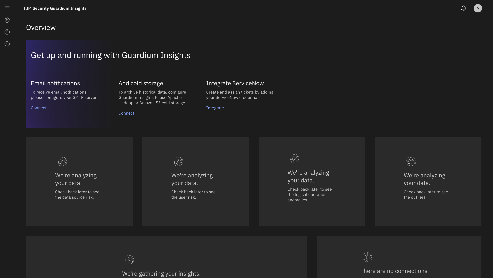
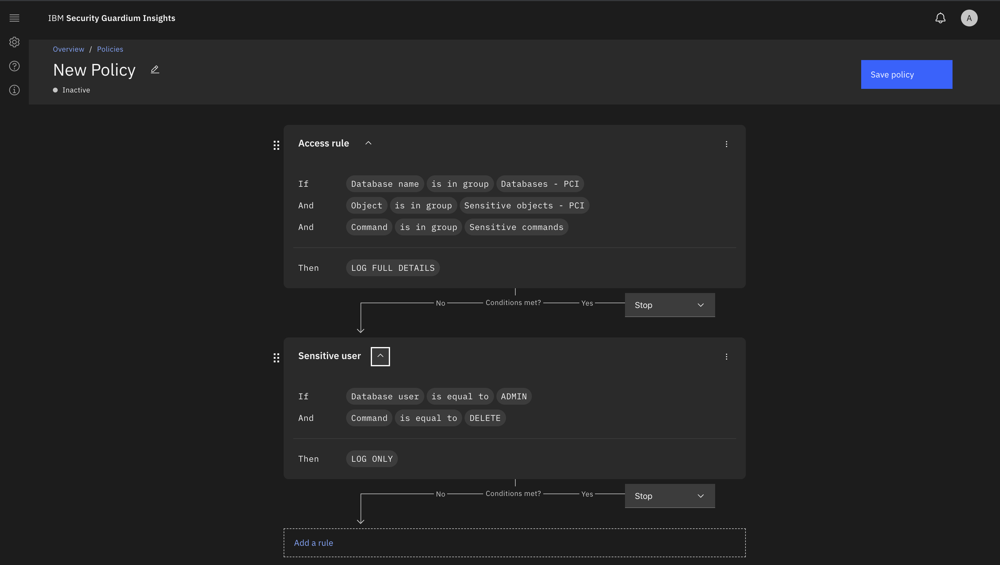
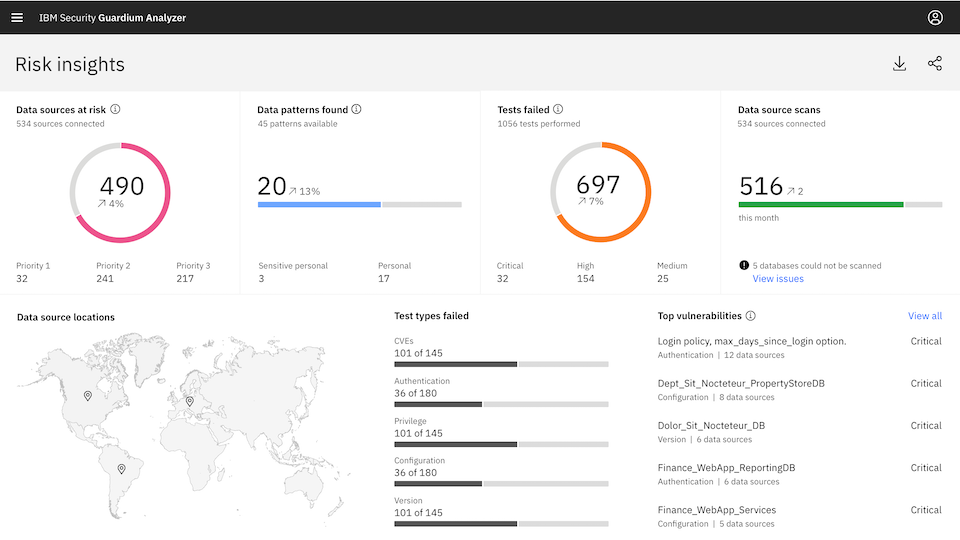

Case study · 2018 to 2021
IBM Security Guardium
Guardium protects enterprise data with risk analysis, anomaly detection, audit reporting and GDPR/HIPAA compliance scanning. I was the frontend design system specialist on the team, building the shared component library and UI standards used by two products.

The work
Guardium Insights and Analyzer
Both products are dense enterprise security tools. My work focused on making them consistent and accessible.
Guardium Insights
Risk, anomaly detection and audit reporting
I built the React component system and UI standards for Insights, which surfaces data-security risk and turns raw activity into audit-ready reports. I also helped mentor backend engineers from several teams as they picked up frontend work.

Visual rule builder
Security rules without engineering help
I designed and shipped the drag-and-drop policy editor behind Guardium's anomaly detection and compliance alerting. It compiles user-defined conditions into detection rules, so security teams can build their own alerts instead of filing tickets.

Design system
One accessible component library for two products
I built a WCAG 2.1 AA React and TypeScript component library used by both Guardium Insights and Analyzer, replacing duplicated per-product UI so new compliance screens could reuse existing components. I also ran a three-day Carbon Design System workshop for 30 Dublin engineers.
Impact
Highlights
- enterprise products
- 2
- component library
- WCAG 2.1 AA
- engineers trained on Carbon
- 30